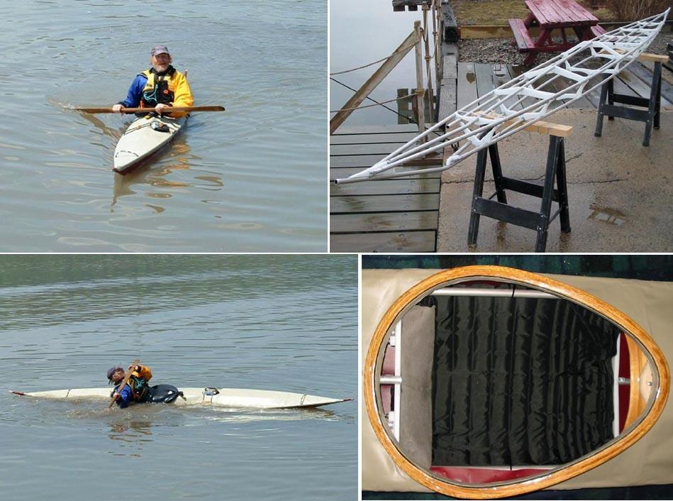

| (New) Sea Ranger by Jack Gilman (US) | Menu Last Page Next Page |
|

Jack Gilman from Yonkers, NY paddling his Sea Ranger (536 X 49.5cm) on the Hudson River. Jack, an experienced paddler and builder had this to say about the boats performance...."It rolls fine. You do have to be careful about windowshading...but it is all that I wanted from a new boat. Very light, not a speed demon but capable in choppy water. The frame flex is amazing! Bow doesn't dive excessively in following seas."...."It did track well, easy to hold on a line, but for a boat with no rocker it turns great. Almost agile." Jack has posted numerous construction pics at the following
Photo Link. Use the {Back} key to return.
|
|